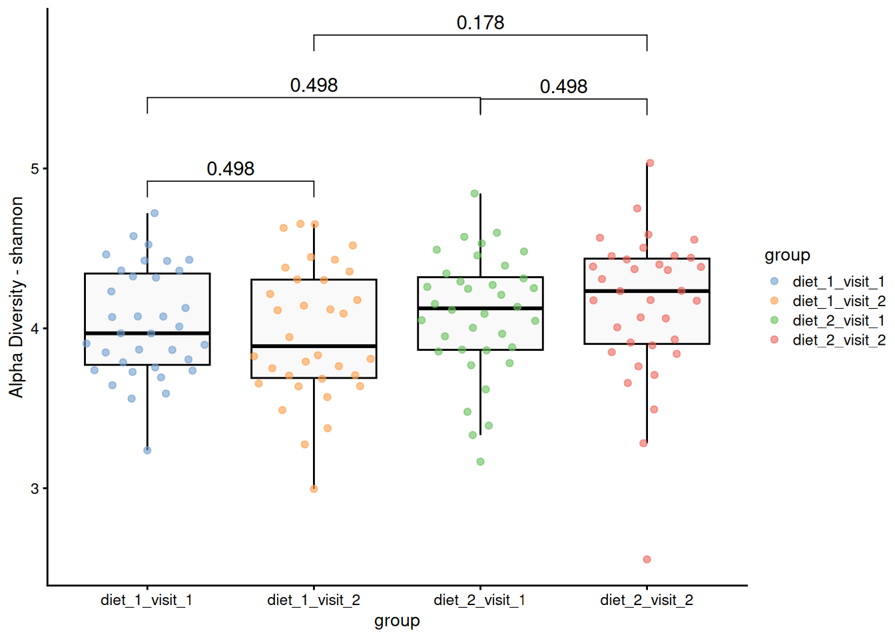

Alpha Diversity
Introduction
This document reports on a microbiota project results of alpha diversity across different diets and visits.
Group-wise comparisons
- Index: shannon
- Group variable: group
- Multiple testing correction: fdr
Visualization
Table of the top findings
Data Summary
class: TreeSummarizedExperiment
dim: 1700 140
metadata(0):
assays(1): counts
rownames(1700): SGB4933 SGB4285 ... SGB15018 SGB4921
rowData names(9): kingdom phylum ... strain clade_name
colnames(140): AE1332 AE2332 ... VK1336 VK2336
colData names(10): sample id ... shannon group
reducedDimNames(0):
mainExpName: NULL
altExpNames(9): kingdom phylum ... PrevalentGenus PrevalentSpecies
rowLinks: NULL
rowTree: NULL
colLinks: NULL
colTree: NULLVersion info
R version 4.4.2 (2024-10-31)
Platform: x86_64-pc-linux-gnu
Running under: Ubuntu 24.04.1 LTS
Matrix products: default
BLAS: /usr/lib/x86_64-linux-gnu/blas/libblas.so.3.12.0
LAPACK: /usr/lib/x86_64-linux-gnu/lapack/liblapack.so.3.12.0
locale:
[1] LC_CTYPE=en_US.UTF-8 LC_NUMERIC=C
[3] LC_TIME=en_US.UTF-8 LC_COLLATE=en_US.UTF-8
[5] LC_MONETARY=en_US.UTF-8 LC_MESSAGES=en_US.UTF-8
[7] LC_PAPER=en_US.UTF-8 LC_NAME=C
[9] LC_ADDRESS=C LC_TELEPHONE=C
[11] LC_MEASUREMENT=en_US.UTF-8 LC_IDENTIFICATION=C
time zone: Europe/Helsinki
tzcode source: system (glibc)
attached base packages:
[1] stats4 stats graphics grDevices utils datasets methods
[8] base
other attached packages:
[1] vegan_2.6-8 lattice_0.22-6
[3] permute_0.9-7 lubridate_1.9.3
[5] forcats_1.0.0 stringr_1.5.1
[7] purrr_1.0.2 readr_2.1.5
[9] tibble_3.2.1 tidyverse_2.0.0
[11] tidyr_1.3.1 scater_1.33.4
[13] scuttle_1.15.4 quarto_1.4.4
[15] patchwork_1.3.0 multtest_2.61.0
[17] miaViz_1.13.10 ggraph_2.2.1
[19] mia_1.15.6 TreeSummarizedExperiment_2.13.0
[21] Biostrings_2.73.2 XVector_0.45.0
[23] SingleCellExperiment_1.27.2 MultiAssayExperiment_1.31.5
[25] SummarizedExperiment_1.35.3 Biobase_2.65.1
[27] GenomicRanges_1.57.1 GenomeInfoDb_1.41.2
[29] IRanges_2.39.2 S4Vectors_0.43.2
[31] BiocGenerics_0.51.3 MatrixGenerics_1.17.0
[33] matrixStats_1.4.1 ggsignif_0.6.4
[35] ggpubr_0.6.0 ggplot2_3.5.1
[37] DT_0.33 dplyr_1.1.4
[39] ANCOMBC_2.8.0
loaded via a namespace (and not attached):
[1] fs_1.6.5 DirichletMultinomial_1.47.0
[3] httr_1.4.7 doParallel_1.0.17
[5] numDeriv_2016.8-1.1 tools_4.4.2
[7] doRNG_1.8.6 backports_1.5.0
[9] utf8_1.2.4 R6_2.5.1
[11] lazyeval_0.2.2 mgcv_1.9-1
[13] withr_3.0.2 gridExtra_2.3
[15] cli_3.6.3 sandwich_3.1-1
[17] sass_0.4.9 labeling_0.4.3
[19] slam_0.1-54 mvtnorm_1.3-2
[21] proxy_0.4-27 yulab.utils_0.1.8
[23] foreign_0.8-86 decontam_1.25.0
[25] readxl_1.4.3 rstudioapi_0.17.1
[27] generics_0.1.3 gridGraphics_0.5-1
[29] crosstalk_1.2.1 gtools_3.9.5
[31] car_3.1-3 rbiom_1.0.3
[33] Matrix_1.7-0 ggbeeswarm_0.7.2
[35] fansi_1.0.6 DescTools_0.99.57
[37] DECIPHER_3.1.4 abind_1.4-8
[39] lifecycle_1.0.4 multcomp_1.4-26
[41] yaml_2.3.10 carData_3.0-5
[43] SparseArray_1.5.41 grid_4.4.2
[45] crayon_1.5.3 cowplot_1.1.3
[47] beachmat_2.21.6 pillar_1.9.0
[49] knitr_1.48 boot_1.3-30
[51] gld_2.6.6 lpSolve_5.6.21
[53] codetools_0.2-20 glue_1.8.0
[55] ggfun_0.1.6 data.table_1.16.2
[57] vctrs_0.6.5 treeio_1.29.1
[59] Rdpack_2.6.1 cellranger_1.1.0
[61] gtable_0.3.6 cachem_1.1.0
[63] xfun_0.49 rbibutils_2.2.16
[65] S4Arrays_1.5.10 tidygraph_1.3.1
[67] survival_3.7-0 iterators_1.0.14
[69] bluster_1.15.1 gmp_0.7-5
[71] TH.data_1.1-2 nlme_3.1-165
[73] ggtree_3.13.1 bit64_4.5.2
[75] SnowballC_0.7.1 bslib_0.8.0
[77] irlba_2.3.5.1 vipor_0.4.7
[79] rpart_4.1.23 colorspace_2.1-1
[81] DBI_1.2.3 Hmisc_5.2-0
[83] nnet_7.3-19 Exact_3.3
[85] tidyselect_1.2.1 processx_3.8.4
[87] bit_4.5.0 compiler_4.4.2
[89] htmlTable_2.4.3 BiocNeighbors_1.99.1
[91] expm_1.0-0 DelayedArray_0.31.13
[93] checkmate_2.3.2 scales_1.3.0
[95] digest_0.6.37 minqa_1.2.8
[97] rmarkdown_2.29 htmltools_0.5.8.1
[99] pkgconfig_2.0.3 base64enc_0.1-3
[101] lme4_1.1-35.5 sparseMatrixStats_1.17.2
[103] fastmap_1.2.0 rlang_1.1.4
[105] htmlwidgets_1.6.4 UCSC.utils_1.1.0
[107] DelayedMatrixStats_1.27.3 jquerylib_0.1.4
[109] farver_2.1.2 zoo_1.8-12
[111] jsonlite_1.8.9 energy_1.7-12
[113] BiocParallel_1.39.0 tokenizers_0.3.0
[115] BiocSingular_1.21.4 magrittr_2.0.3
[117] Formula_1.2-5 GenomeInfoDbData_1.2.13
[119] ggplotify_0.1.2 munsell_0.5.1
[121] Rcpp_1.0.13-1 ape_5.8
[123] ggnewscale_0.5.0 viridis_0.6.5
[125] CVXR_1.0-15 stringi_1.8.4
[127] rootSolve_1.8.2.4 zlibbioc_1.51.1
[129] MASS_7.3-61 plyr_1.8.9
[131] mediation_4.5.0 parallel_4.4.2
[133] ggrepel_0.9.6 lmom_3.2
[135] graphlayouts_1.2.0 splines_4.4.2
[137] hms_1.1.3 ps_1.8.0
[139] igraph_2.1.1 rngtools_1.5.2
[141] reshape2_1.4.4 ScaledMatrix_1.13.0
[143] evaluate_1.0.1 tidytext_0.4.2
[145] RcppParallel_5.1.9 tzdb_0.4.0
[147] nloptr_2.1.1 foreach_1.5.2
[149] tweenr_2.0.3 polyclip_1.10-7
[151] ggforce_0.4.2 rsvd_1.0.5
[153] broom_1.0.7 Rmpfr_1.0-0
[155] e1071_1.7-16 tidytree_0.4.6
[157] janeaustenr_1.0.0 rstatix_0.7.2
[159] later_1.3.2 viridisLite_0.4.2
[161] class_7.3-22 gsl_2.1-8
[163] lmerTest_3.1-3 aplot_0.2.3
[165] memoise_2.0.1 beeswarm_0.4.0
[167] cluster_2.1.6 timechange_0.3.0